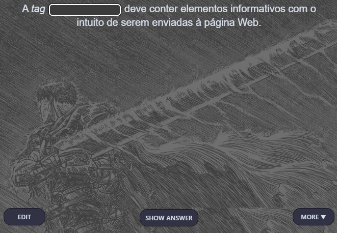

Anki
Anki é um aplicativo e de código aberto com o foco em Flashcards.
Sua estrutura é baseada em Decks, Subdecks e Flashcards.
Ele utiliza-se da metodologia de repetição espaçada, trabalhando com o desempenho da pessoa sobre aquele cartão. Se a pessoa exerce um bom desempenho, aquele cartão específico demora mais tempo para ser exibido novamente, caso contrário, demora menos tempo a ser exibido novamente.
- Decks:
- Decks são como pastas, onde recebem um nome (geralmente o que o tema em que o flashcard em questão vai apresentar).
- Subdecks:
- Subdecks são como sub-pastas de decks, geralmente utilizadas para sub-dividir tópicos apresentados em flashcards.
- Flashcards:
-
Flashcards são cartões que contem basicamente perguntas e respostas, onde existem diferentes maneiras em que podem ser descritos, tais como:
-
Omissão de palavras
- Esconde uma palavra dentro de uma frase.
Exemplo: Frente: [...] é a capital da Estônia. Verso: Tallinn é a capital da Estônia.
- Esconde uma palavra dentro de uma frase.
-
Básico
- Uma pergunta vem a frente do cartão, sua resposta aparece na parte de trás do cartão.
-
Oclusão de imagens
- Oclusão de imagens funciona um pouco diferente dos demais. Uma imagem é inserida e blocos são postos acima de informações relevantes.
-
Omissão de palavras
Seu propósito em geral é memorar as informações do cartão em questão.
Após respondido, aparecerá quatro opções:
Again
Again é utilizada quando você erra a resposta do cartão.
Hard
Hard é utilizado quando você achou difícil responder o cartão. Ele reaparecerá em menos tempo.
Good
Good é utilizado quando você achou nem tão difícil, mas nem tão fácil responder aquele cartão. Ele reaparecerá em um tempo mais prolongado do que o hard.
Easy
Easy é utilizado quando foi fácil memorizar a resposta do cartão. Ele é o mais demorado a voltar a aparecer, geralmente em questão de dias.
Com o Anki, pode-se aprender qualquer coisa, não há um nicho específico do que você vai aprender dentro dele, isto porque, o próprio usuário molda como seu Anki funcionará.